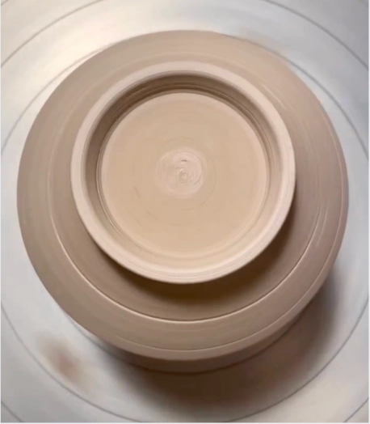
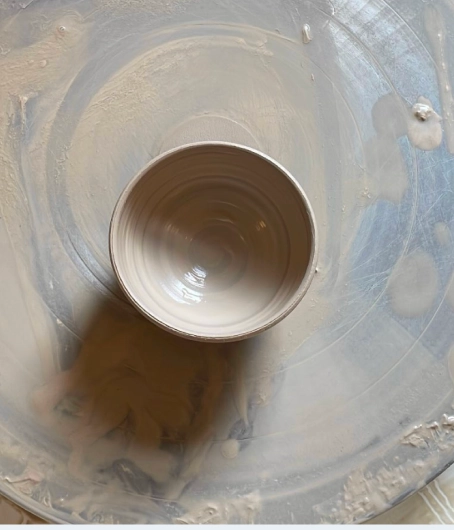
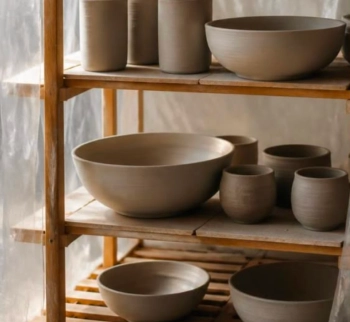
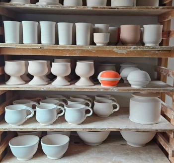
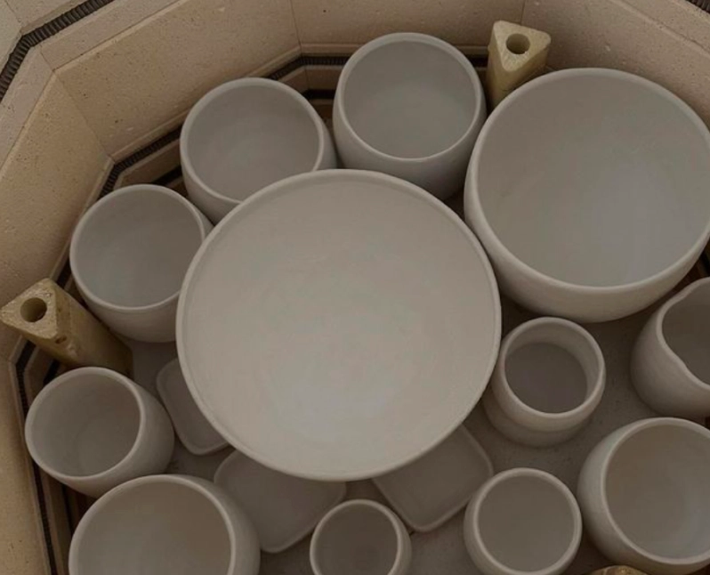
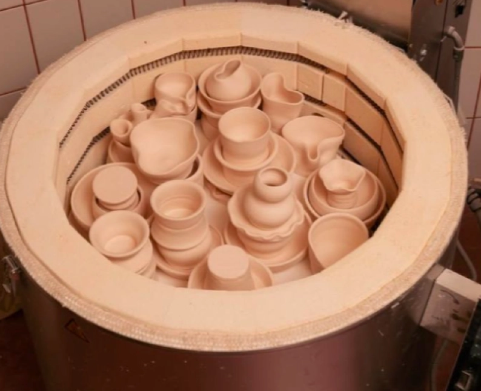
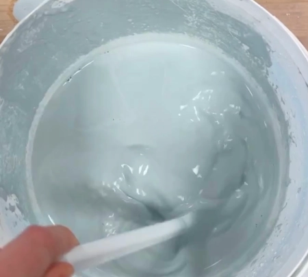
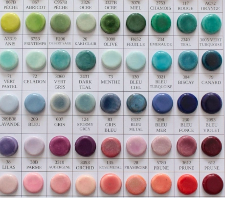
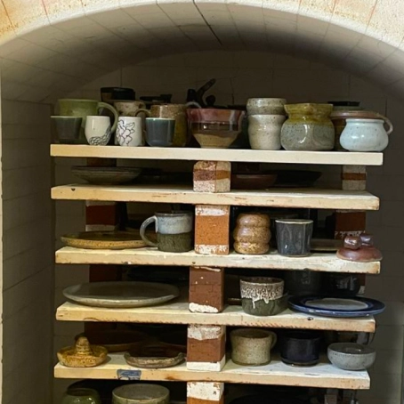
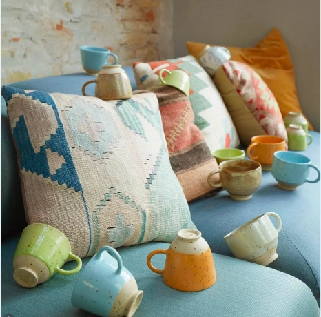

Processen
Fra ler til færdigt produkt:
De fleste af mine designs bliver formet ved drejeskiven, hvor leret langsomt får sin form. Enkelte designs bliver i stedet formet udelukkende i hånden, hvilket giver dem et anderledes og mere frit udtryk.
1
Drejning


Drejning er den teknik, jeg bruger til størstedelen af mine produkter. Her placeres leret på drejeskiven, hvor det først centreres og derefter langsomt formes med hænderne, mens skiven roterer. Undervejs arbejder jeg med lerets tykkelse, højde og form for at skabe det ønskede udtryk. Det kræver ro og præcision, da selv små bevægelser kan ændre formen. Når formen er færdig, får den lov til at tørre, inden den kan bearbejdes videre og senere glaseres og brændes. Selvom den samme proces gentages, bliver hvert produkt stadig en smule forskelligt på grund af arbejdet i hånden.
2
Tørring


Når keramikken er formet, skal den tørre langsomt og grundigt, inden den kan komme i ovnen. Tørringen er en vigtig del af processen, fordi leret skal være helt tørt, før det brændes. Under tørringen fordamper vandet fra leret, og emnet bliver gradvist mere fast. Det er samtidig en sårbar fase, hvor små revner eller skævheder kan opstå, hvis leret tørrer for hurtigt eller ujævnt. Derfor får hvert stykke tid til at tørre i sit eget tempo, så det er klar til den første brænding.
3
1. brændning


Når keramikken er helt tør, er den klar til den første brænding. Her bliver de formede stykker langsomt opvarmet i keramikovnen, så leret bliver fast og holdbart. Efter brændingen er keramikken blevet til det, man kalder forglødet eller biscuitbrændt keramik. Den er nu stærkere, men stadig porøs, hvilket gør den klar til næste trin i processen – glaseringen. Den første brænding er derfor et vigtigt skridt, hvor det bløde ler forvandles til et fast fundament for det færdige design.
4
Glasering


Efter den første brænding er keramikken klar til at få sin farve og overflade. Glasuren påføres forsigtigt på det forglødede ler, enten med pensel, ved at dyppe emnet eller ved at hælde glasuren over. Glasuren er med til at give hvert stykke sit eget udtryk. Farve, tykkelse og påføring har betydning for, hvordan overfladen kommer til at se ud efter den sidste brænding. Derfor kan den samme glasur også give forskellige resultater fra stykke til stykke. Når glasuren er tør, er keramikken klar til den anden brænding, hvor glasuren smelter og bliver til den færdige overflade.
5
2. brændning


Når glasuren er tør, er keramikken klar til sin anden brænding. Denne gang bliver emnerne igen opvarmet i keramikovnen, så glasuren smelter og binder sig til overfladen. Under brændingen forvandles glasuren og får sin endelige farve, struktur og glans. Det er også her, mange af de små variationer i glasuren kommer frem, hvilket gør hvert stykke unikt. Når ovnen er kølet helt ned, kan keramikken tages ud og er nu klar til at blive brugt og få sin plads i hverdagen.